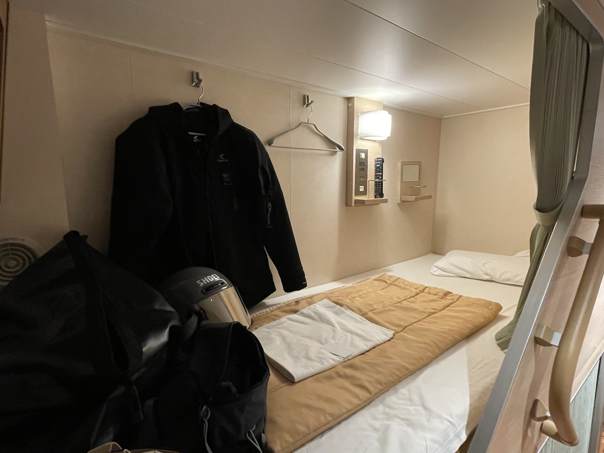

XSR900で北海道に行くことにした。目標はずっと行けていなかった道東——根室、知床、網走。SR400で走った北海道とは違うルートを、今度は全力で走り切る。
フェリーはさんふらわあ（商船三井フェリー）の大洗発苫小牧行き。夜に出航して翌日昼過ぎに着く、ライダーにはおなじみのルートだ。荷物をシートバッグとサイドバッグに詰め込み、午後の大洗港へ向かった。

乗船手続きを終え、バイクを甲板に固定してもらったあとは客室でのんびりする時間になる。今回取ったのはコンフォートグレードの個室。ヘルメットやジャケットを壁に掛けて、荷物を広げれば一気に「旅のテリトリー」ができあがる。この感覚が好きだ。

出航後はレストランで夕食をとり、大浴場で汗を流して早めに就寝。翌日昼過ぎに苫小牧に着く。約18時間の船旅。バイクの上では走れない時間を、フェリーの上でゆっくり過ごすのも悪くない。
大洗を出た瞬間から、北海道はもう始まっている気がした。
移動情報
1
大洗港フェリーターミナル
茨城県東茨城郡大洗町港中央10 / さんふらわあ（商船三井フェリー）大洗〜苫小牧航路。夜出航、翌日昼過ぎ着（約18時間）。